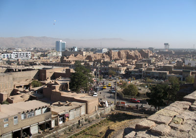
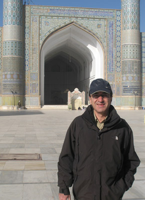
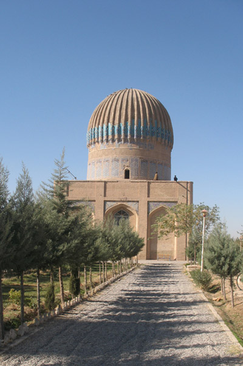
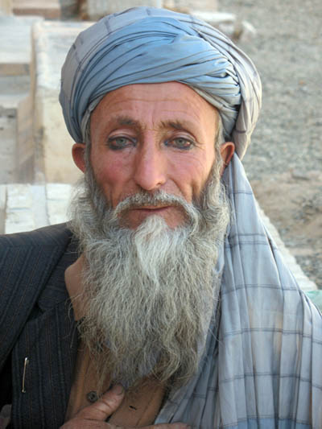
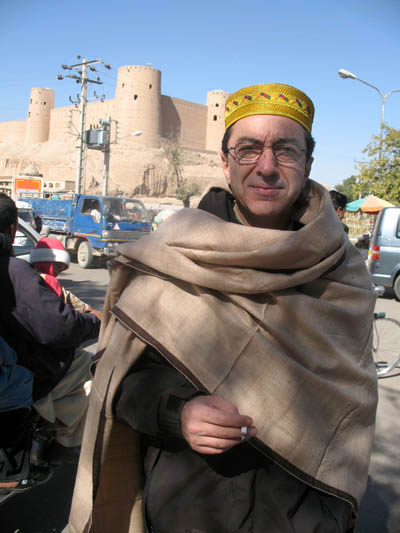

Copyright © Ali Parsa 1998-2011
All rights reserved
| The City City of Herat, as seen from the top of its historic citadel. One of the usual scences in the city are the kites in the sky. The city is growing with modern buildings to be seen here and there. |  |
|  | Masjid-e Jame' or the Friday Mosque, as it is known in the west, is the most beautiful historical building in Herst. It was built during the Timurid times by Shahrokh and his wife, Goharshad. The decorations are familliar Persian/Islamic patterns, but the form shows signes of the northwest Indian architecture. |
Goharshad This rather small monumnet is Goharshad's tomb. She was a lover of arts and a supporter of artists during her time. The architecture resembles that of the Gur-e Amir in Samarkand. |  |
 | A man in Herat with traditional attire. |
In front of the Ekhtiarodin citadel. In Herat prices are very low, compared to Tehran. I baught this traditional shawl and hat for less than five dollars. |  |

Copyright © Ali Parsa 1998-2011
All rights reserved